Stanford Movement Lab · dex-project · week of 2026-10-17 → 10-23
Dexterous Guitar: a Wuji Hand 2 on a Unitree G1 learns to press, shift and play
Left-hand guitar playing learned in physics simulation (MuJoCo Warp, PPO). Every contact and force comes from the solver. Clips play at real speed and loop.
Green = passes acceptance: mean policy ×4 on the full robot with the guitar mounted to the torso.
Results
PASS · 10-23
3-note scale across strings: S4F4 → S3F4 → S2F4
Hand close-up · view A along the neck, view B along the stringsUpper body · front and front-left 45°String close-up · along the string and top-down · red = string touched by the hand, orange = string on the fret · forces per string
Hand close-up, all 10 chordsString close-up: per-string contact and fret-wire force
10/10
full model
40/40
±2 mm perturbation
18–26°
fingertip angle
24
updates, no prior
PASS · 10-23 · full model
Chord change: Db1 one finger → three fingers
Hand close-up on the full model, real time: hold the single note, move with the thumb bracing the neck, land all three fingers (S4 / S5 / S3) and hold
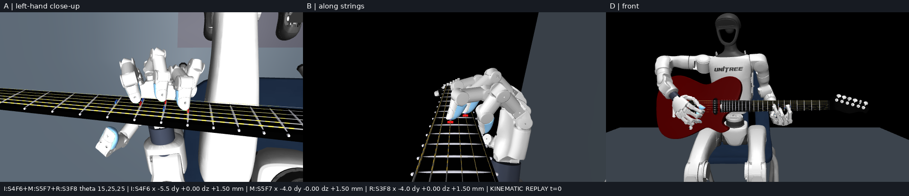
New landing shape: each finger 4–5.5 mm behind its fret · holds all three strings 398 ms in open loop
4/4
hold 380–388 ms
4/4
move · 0 N on strings
4/4
3 fingers land · 334–478 ms
4/4
full model · land 334–466 ms
TRAINING · 10-23
Dataset mixture: four melodic segments in one policy
The four reference segments (two recordings each of two 3-note runs), mocap timing at half speed · policy training on them now
73 %
press slots held ≥50 ms · was 40 %
91 %
run 1 (B start) · 465/512
55 %
run 2 (B♭ start) · 284/512
12 %
run 2 first note · training
Training statistics after 4 updates (21 min each); mean-policy evaluation follows when it plateaus. The B♭ start was never seen by the warm-start policy.
DESIGN · 10-22
Guitar mount: back bracket to the torso
Press at fret 9 · left camera on the guitar, right camera on the torso · curves: press force and neck motion (dashed = unmounted)
0.2 mm
neck motion, 25 N
25 mm
without the bracket
484 g
aluminium
How the policy is trained
State · 231
joint pos 69 · joint vel 69
last command 69
guitar pose 12 · fingertip pads 12
Task · 167
5 timed events × 27
4 finger descriptors × 8
→
Policy
MLP · Gaussian
PPO, adaptive KL
→
Action · 27
arm 7 + hand 20
range & slew limits
PD targets · 20 Hz
→
Physics
MuJoCo Warp · 1024 worlds
10 kHz · string node chains
hand stiffness from sysid
→
Reward
string ≥2 N · fret ≥1 N
neighbours <1 N
force band 2–7.5 N
move: no contact
↺ next observation↺ PPO update
Scaffolding · decays to zero over 3–12 updates
Arm BCtoward the IK or mocap wrist path
Finger BCrelease → lift → land shapes
RSIhalf of episodes start mid-trajectory
Explorationnoise ×2 during moves
Train: body + guitar welded (C1W)
Accept: full G1 + mounted guitar + masked frozen joints
SUPERVISION REFERENCES · what the arm BC and RSI follow
Dataset segments (now training): human mocap wrist path → IK, anchored on the robot's own hand shapes; fingers follow release / lift / land rules; played open-loop in physics. Top: ScaleF, ScaleBb (S4F3 → S4F5 → S5F7). Bottom: ScaleE, ScaleGb (S4F4 → S4F6 → S5F8). Green = pressed, yellow = moving to the next note.IK-only reference used for the 3-note scaleIK-only reference used for the shift 4 → 9
The shifts, the 3-note scale and the chord change above were trained on IK-only references (chord timing from the dataset). Precision and press duration are never scripted: the policy has to find them in physics.
EPISODES & WHAT COUNTS AS A PASS
Shift 4→9 2.2 s
press F40.5
move1.0
press F90.7
Double shift 4→9→4 3.9 s
press F40.5
move1.0
press F90.7
move1.0
press F40.7
3-note scale 3.1 s
S4F40.5
move0.6
S3F40.7
move0.6
S2F40.7
Chord change Db1 1.8 s
1 finger0.5
move0.6
3 fingers0.7
Dataset segments human timing × 2
note / chord
move
note / chord
move
…
Press window passestarget string ≥2 N from the hand · fret wire ≥1 N · neighbours <1 N · held ≥50 ms
Move window passesevery 2 ms sample <0.5 N on all strings · no guitar-body contact · thumb on the neck back allowed
A motion passes only when every window passes, on the mean policy, in 4 of 4 repeats. Move durations are deliberately slow for now (humans shift in ≈0.35 s); the real hand tracks 2.5–4 rad/s, so speed-ups come later.
Gallery
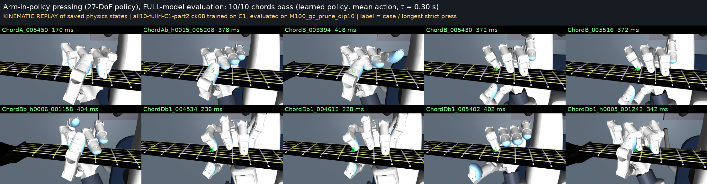
10 chords, full model, learned policy at 0.30 s · label = longest press
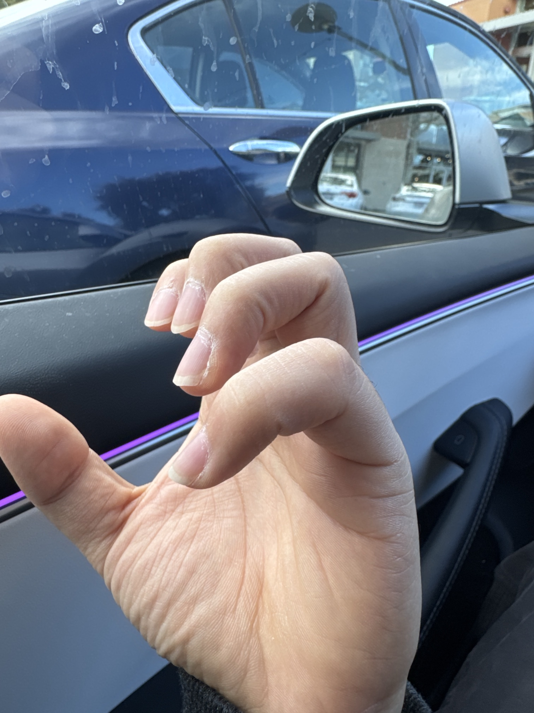
Hand-shape standard chosen from the player's own hand: arched fingertips
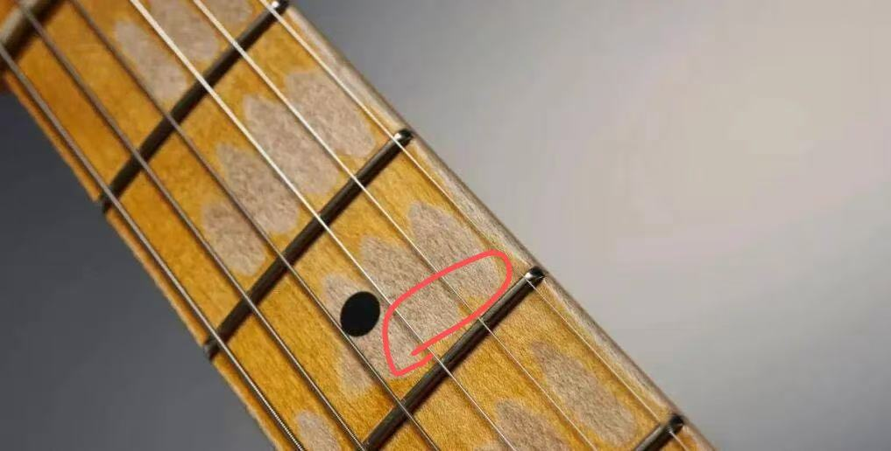
Press target: 4 mm behind the fret wire
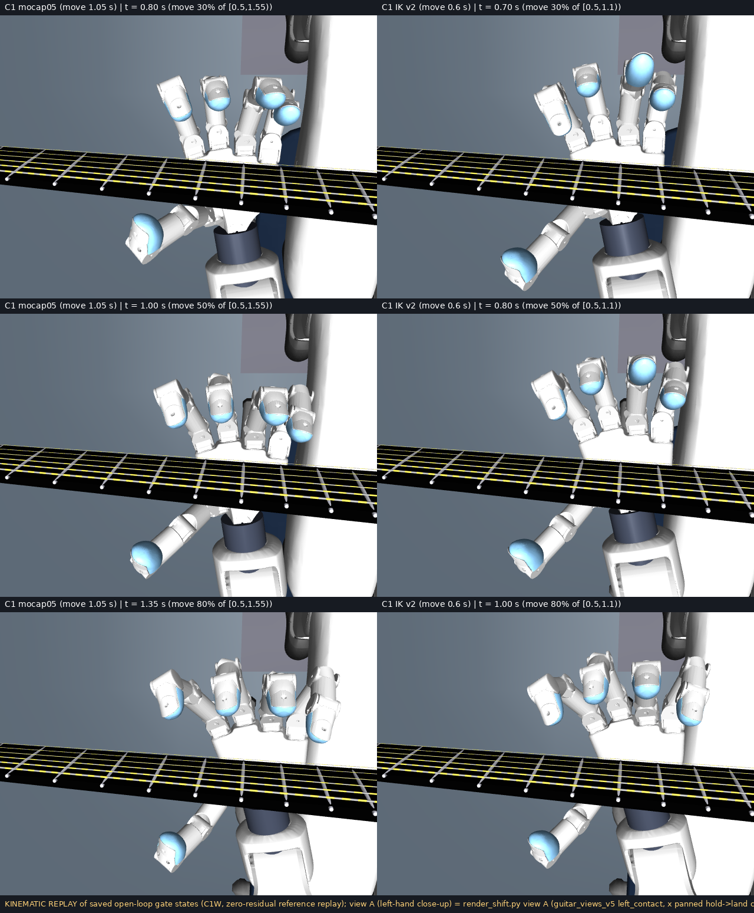
Chord change reference: human mocap wrist path (left) vs IK (right) at 30 / 50 / 80 % of the move
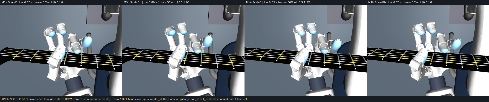
Four dataset melodic segments (two recordings each) at mid-move, all passing the gate
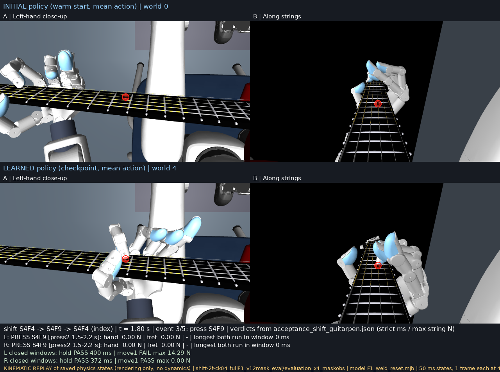
Double shift at 1.8 s: pressing F9 on the acceptance model
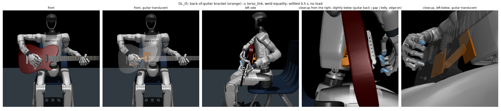
Bracket design world: guitar back plate → bar → torso plate (orange)
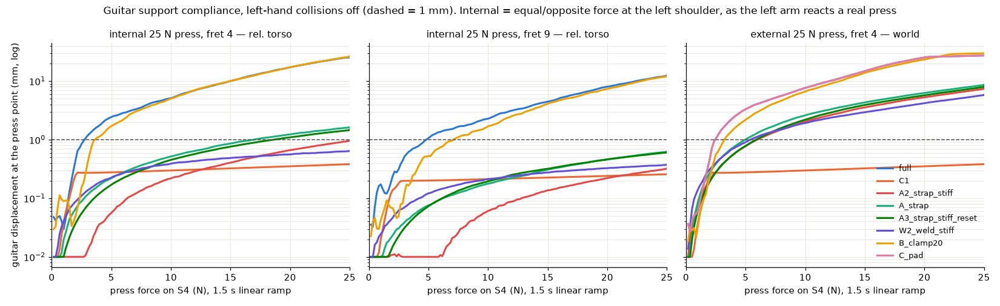
Neck motion vs press force: unmounted 25 mm, bracket <1 mm
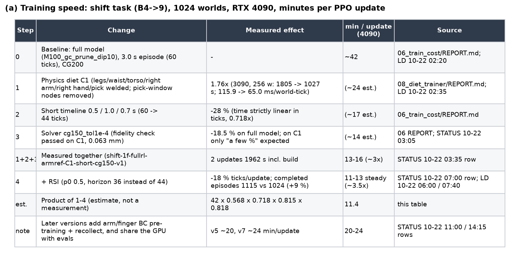
Training speed: 42 → 12–16 min per update
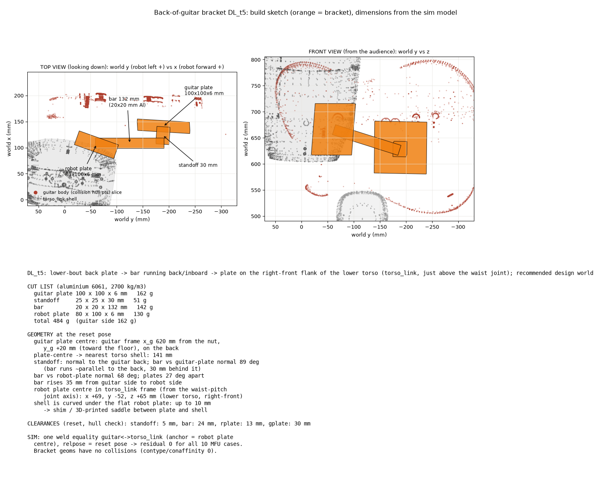
Bracket build sketch, aluminium 6061, 484 g
Scoreboard
10/10
chords · full model
40/40
±2 mm
4/4
shift 4→9
4/4
double shift
4/4
3-note scale
4/4
chord change
Dataset
403
chord transitions
296
melodic runs
Pei Xu guitar mocap · 50 recordings
2.7 rad/s
human finger speed
0.5×
first batch speed
Hand limit raised to 2 rad/s (real hand tracks 2.5–4)
84–116 mm
human held-note stretch
53–69 mm
Wuji max
So only the sounding note is required
Lessons
01
The reset is the leverA pressed, settled start pose beat every reward change.
02
References must be feasibleOutside the policy's range or speed, the landing was one string off.
03
Keep the gate cheapCollision-free move, landing ≤3 mm; precision is RL's job.
04
Keep the best checkpointAfter the scaffold decays, later checkpoints drift.
Next
NOW
Dataset mixture training
Four melodic segments in one policy, then chord chains and longer runs; confirm the chord change on the full model
NEXT
Natural idle fingers, smoother motion
Rest-posture and smoothness terms for the single-finger tasks; mocap-wrist chord reference
THEN
Real robot
Build the bracket, measure it, press the 10 chords on G1 + Wuji Hand 2
Numbers from acceptance JSON files under stageT_transition; living record in notes/GUITAR_DEX_PROJECT.md. Dataset: Pei Xu et al., SIGGRAPH Asia 2024 (CC BY-NC-ND, internal use).